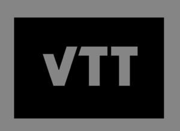

Trade Mark Journal No.2026/008 20 February 2026
WO0000001888064 (9,16,35,36,40,41,42)
Office of origin: European Union Intellectual Property Office (EUIPO)
Date of International Registration:29 April 2025
Date of designation in the UK:
29 April 2025

The grey colour is not part of the trade mark. This colour serves solely as background.
International priority date claimed: 22 November 2024
(European Union Intellectual Property Office (EUIPO))
(019110325)
- Class 9
- Scientific apparatus and instruments; laboratory apparatus and instruments; testing apparatus and instruments; measuring apparatus; measuring sensors; optical apparatus and instruments; apparatus and instruments for conducting electricity; apparatus and instruments for switching electricity; apparatus and instruments for transforming electricity; apparatus and instruments for controlling electricity; computer components and parts; electrical and electronic components; process control units [electric]; optical electronic components; testing and quality control devices; calibrating apparatus; monitoring instruments; computers; computer hardware; databases; data processing equipment and accessories (electrical and mechanical); communications equipment; software; software and applications for mobile devices; computer application software; computer programs, recorded; computer programs, downloadable; software to control building environmental, access and security systems; automatic control apparatus; electronic publications, downloadable.
- Class 16
- Educational publications; printed publications; printed reports; printed research reports; white papers; educational and instructional material; manuals [handbooks]; journals.
- Class 35
- Advertising; business management; business administration; office functions services; business management consultancy and advisory services; industrial management consultation including cost/yield analyses; cost price analysis; expert evaluations and reports relating to business matters; commercial or industrial management assistance; data management services; data compilation for others; compilation of statistical data for use in scientific research; data processing; updating and maintenance of data in computer databases; business consultancy and advisory services; computerized file management; providing business management start-up support for other businesses; business advice relating to growth financing; business analysis and information services, and market research; collection of commercial information; collecting information for business; business data analysis services; provision of business information; business networking services; online business networking services; business risk assessment services; economic analysis for business purposes; providing user rankings for commercial or advertising purposes; business intermediary services relating to the matching of potential private investors with entrepreneurs needing funding; organization of exhibitions for commercial or advertising purposes; arranging and conducting of business meetings; conducting of business feasibility studies; merchandising; marketing forecasting; marketing consulting; event marketing; market research; business strategy services.
- Class 36
- Insurance underwriting; financing services; monetary affairs; real estate affairs; rental of office space; financial appraisal services; valuations and financial appraisals of property; financial appraisals and valuations; financial services relating to investment; financial and investment consultancy services; providing investors with financial information; provision of financial information for professionals in the field of portfolio management, for portfolio management; providing financial information relating to the creditworthiness of companies and individuals; providing financial information on-line; information services relating to finance, provided on-line from a computer database or the Internet; investment account services; investment risk assessment services; providing financing to emerging and start-up companies; venture capital funding services to emerging and start-up companies.
- Class 40
- Providing material treatment information; material treatment information; printing; custom assembling of materials for others; processing of biopharmaceutical materials for others; provision of information relating to chemical processing; treatment of materials using chemicals; custom manufacture of biopharmaceuticals; customized production of cosmetics for others; treatment and recycling of packaging; air purification; water treating; food and drink preservation; consultancy relating to the recycling of waste and trash; recycling services; upcycling [waste recycling]; waste treatment [transformation]; treatment [reclamation] of material from waste; processing of chemicals; processing of fuel materials; processing of gas and oil; treatment and processing of plastics; processing of rubber; applying finishes to textiles; providing information relating to the processing of plastics; rental of chemical processing machines and apparatus.
- Class 41
- Teaching; training; organising of business training; providing online training seminars; arranging of demonstrations for training purposes; arranging of demonstrations for educational purposes; providing facilities for educational purposes; provision of training facilities; organisation of meetings and conferences; arranging and conducting of seminars; arranging of seminars relating to business; conducting courses, seminars and workshops; organisation of seminars and conferences; training courses in strategic planning relating to advertising, promotion, marketing and business; providing electronic publications; publishing services; publishing of scientific papers.
- Class 42
- Scientific and industrial research; scientific research and analysis; computer aided scientific research services; research relating to the computerised automation of industrial processes; research in the field of artificial intelligence technology; advisory services relating to scientific research; provision of information relating to scientific research; preparation of reports relating to scientific research; engineering design and consultancy; provision of information relating to industrial design; professional consultancy relating to industrial design; provision of information relating to industrial engineering; technological planning services; technological services relating to manufacture; engineering consultancy relating to manufacture; industrial analysis services; computer aided industrial analysis services; providing information about industrial analysis and research services; software as a service [SaaS]; platform as a service [PaaS]; platform as a service [PaaS] featuring software platforms for transmission of images, audio-visual content, video content and messages; platforms for artificial intelligence as software as a service [SaaS]; providing artificial intelligence computer programs on data networks; technical data analysis services; technological advisory services relating to data processing; data mining; electronic data storage; development of systems for the processing of data; designing of data processing programmes; development of industrial processes; services for monitoring industrial processes; conducting industrial tests; conducting of quality control tests; consultancy services relating to quality control; quality control testing services for industrial machinery; materials testing and analysing; material testing; material testing for fault detection; technical testing services; technical measuring and testing; laboratory testing; component testing; product quality testing; scientific testing services; testing, authentication and quality control; testing, analysis and evaluation of the goods of others for the purpose of certification; microbiological testing; testing of chemicals; testing of cosmetics; inspection of cosmetics; testing of pharmaceuticals; biotechnology testing; environmental testing and inspection services; scientific laboratory services; laboratory services; hosting on-line web facilities for others; hosting platforms on the Internet; maintenance of websites and hosting on-line web facilities for others; providing computer facilities for the electronic storage of digital data; genetic research; research and development services in the field of gene expression systems; laboratory research in the field of gene expression; genetic engineering services; scientific research in the field of genetics and genetic engineering; genetic testing for scientific research purposes; genetic engineering services relating to plants; scientific research relating to genetics of plants; biochemical engineering services; biochemical research and development; biochemical research and analysis; biochemistry services; biochemistry consultancy; advisory services relating to biochemistry; information on the subject of scientific research in the field of biochemistry and biotechnology; scientific services relating to the isolation and cultivation of human tissues and cells; product design and development; design services relating to the creation of elementary cells; DNA screening for scientific research purposes; testing of raw materials; quality control of raw materials; chemical research; research to develop new products; research services; research laboratories; chemical laboratories; medical research laboratory services; preparation of biological samples for testing and analysis in research laboratories; research and testing services in the fields of bacteriology and virology; research and development in the pharmaceutical and biotechnology fields; research and development services in the field of chemistry; research and development services; research and development in the field of microorganisms and cells; stem cell research; scientific services and research relating thereto; scientific research for medical purposes; scientific research; biotechnological research relating to industry; technical consultancy in relation to research services relating to foods and dietary supplements; cell separation research services; research relating to cultivation in horticulture; research relating to molecular sciences; research in measurement technology; research in the field of materials science; research relating to waste analysis; biotechnological research relating to agriculture; medical and pharmacological research services; scientific research relating to cosmetics; research relating to plant breeding; biotechnological research relating to enzymatic synthesis; biomedical research services; scientific research relating to biology; biological research and analysis; biochemistry research services; process monitoring for quality assurance; industrial process research; technological analysis services; providing temporary use of non-downloadable software applications accessible via a web site; design and development of new products; development of new technology for others; biological development services; architectural and urban planning services; town planning consultancy services; town planning advisory services; research on building construction or city planning; research in the field of energy; consultancy relating to technological services in the field of power and energy supply; technological consultancy; water quality control services; water analysis; monitoring of water quality; environmental assessment services; engineering services in the field of environmental technology; design of controlled environmental buildings; environmental consultancy services; consultancy services relating to environmental planning; providing temporary use of on-line non-downloadable software for database management; civil engineering planning services; engineering services relating to automatic data processing; technical design and planning of telecommunications networks; road surveying; design of road networks; vehicle design services; infrastructure as a service [IaaS]; software development, programming and implementation; software engineering; rental of computer software; creating and maintaining websites for mobile phones; IT consultancy, advisory and information services; cloud computing; computer software design; computer system design; hosting of computerized data, files, applications and information; design and development of route planning software.
Teknologian tutkimuskeskus VTT Oy
Representative: Laine IP Oy, Porkkalankatu 24, FI-00180 Helsinki, FINLAND